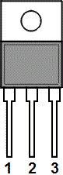
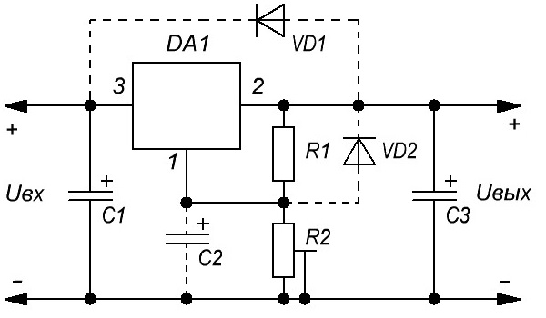

Стабилизатор КР142ЕН12
Микросхема КР142ЕН12 регулируемый трехвыводный стабилизатор положительного напряжения, позволяющий питать устройства током до 1,5 А в диапазоне напряжений от 1,2 В до 37 В.
КР142ЕН12А собран в стандартном транзисторном корпусе КТ-28-2 (TO-220), позволяющем легко монтировать его на плате и теплоотводе. В дополнение к более высоким, чем у фиксированных стабилизаторов характеристикам, КР142ЕН12А имеет полную защиту от перегрузок, включающую внутрисхемное ограничение по току, защиту от перегрева и защиту выходного транзистора. Все системы защиты от перегрузок остаются полностью работоспособными даже если вход регулирования отключен.
{kind=link}
Обычно входной конденсатор не нужен, если корпус стабилизатора находится в пределах 15 см от входной фильтрирующей емкости, в противном случае он необходим. В дополнение может быть добавлен выходной конденсатор для сглаживания переходных процессов. Для достижения очень высокого значения коэффициента подавления пульсаций вход регулирования может быть зашунтирован емкостью.
КР142ЕН12А находит применение в широком диапазоне других приложений. Например, переключаемый стабилизатор, стабилизатор с программи руемым выходом, а с присоединением постоянного резистора между выходом и входом регулирования КР142ЕН12А может использоваться как прецизионный токовый стабилизатор. Источники с электронным выключением можно получить закорачиванием вывода регулирования на землю, при этом на выходе получается напряжение 1,2 В, которое позволяет уменьшить ток в нагрузке.
Масса не более 2 г.
Выводы корпуса покрыты олововисмутом.

Рис. 1 - Назначение выводов стабилизатора КР142ЕН12А
1 — регулировка; 2 — выход; 3 — вход
Таблица 1
| Параметры | Условия | КР142ЕН12А | КР142ЕН12Б |
|---|---|---|---|
| Минимальное выходное напряжение, В | при Uвх = 5 В, Iвых = 5 мА | 1,2…1,3 | 1,2…1,3 |
| Минимальное падение напряжения, В | при Uвх = 18,5 В, Uвых = 15 В | ≤3,5 | ≤3,5 |
| Нестабильность по напряжению, %/В | при Uвх = 20 В, Uвых = 15 В, Iвых = 5 мА | ≤0,01 | ≤0,03 |
| Нестабильность по току, %/А | при Uвх = 20 В, Uвых = 15 В, Iвых = 5 мА | ≤0,2 | ≤0,2 |
| Температурный коэффициент напряжения, %/°С | при Uвх=5 В, Uвых=1,18…1,33 В, Iвых=5 мА | ≤0,02 | ≤0,02 |
| Дрейф выходного напряжения, % | при Uвх = 45 В, Uвых = 15 В, Iвых = 23 мА | ≤1 | ≤1 |
| Температура окружающей среды, °С | — | -10…+70 | -10…+70 |

Рис. 2 - Типовая схема включения стабилизатора КР142ЕН12А